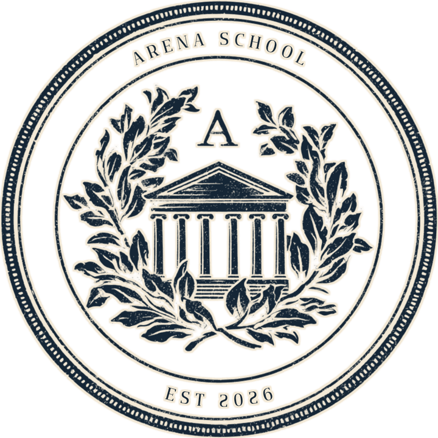

6 posts · 3:4 (1080×1440) · 左右滑动每一行 · 点击放大 · 左侧是配文草稿
为什么两个不是老师的人，要来做 AI 教育？ 大家好，这里是 Arena School。我们是两位联合创始人：Phillip 读计算机、在 Y Combinator 创过业；Jing Jing 不是工程师，却一直用 AI 给自己做网站和工具。我们都没有教师资格证。 但我们在职场里看得很清楚：同样的工作，会用 AI 的人和不会用的人，差距正在迅速拉大。进步最快的人不等别人来教，他们选一个问题，打开最新的工具，一直做到它跑起来为止。学校终会跟上，但孩子们等不起。 所以我们现在在做这些事： · 和学校合作：在校园里带五天的学生项目营，给老师做不用写代码的 AI 实战培训，也和家长、校董聊 AI 如何改变工作和升学 · 陪学生做项目：七至十二年级的学年导师陪跑，一个真实项目做满六个月 · 帮年轻人起步：面向本科生和职场新人的 AI 职场先发营 · 在教育会议上分享我们的方法 我们在北京和香港带过学生项目，也为清华大学苏世民书院的教职人员做过 AI 培训。 这个账号会分享： · 我们自己用 AI 做的真实工具，完整流程 · 不会写代码也能上手的方法 · 家长常问的问题，比如“用 AI 算不算作弊” 想了解我们的项目，或想把 Arena 带进你的学校，主页简介里有官网，也欢迎直接私信。 #ArenaSchool #AI教育 #家庭教育 #孩子培养 #素质教育 #国际学校 #升学规划 #AI学习 #vibecoding
课件散在几十个文件夹里，想找一条迟交规定、一个考试日期，得把每门课点一遍。 我们的联合创始人 Jing Jing 读研时给自己做了一个 Chrome 插件：它在本地读完所有课件，你用大白话问，答案会标出自哪份文件、第几页，点一下就能打开核对。问题不清楚时，它会先反问，而不是瞎猜。 它不替你写作业，它帮你找到老师已经给你的材料。 这也是我们在 Arena 教学生的方式：先找到一个自己每天都会遇到的麻烦，再用 AI 把解决它的工具做出来。在我们的学生项目和导师陪跑里，孩子们做的第一件作品，往往就是这样一个“给自己用”的小工具。 完整流程在图里，下一篇讲不会写代码怎么把它做出来。想了解我们怎么带学生做项目，主页简介里有官网，也欢迎私信。 #ArenaSchool #AI学习 #学习方法 #学习工具 #家庭教育 #国际学校 #留学生 #vibecoding #AI工具
上一篇的学习助手，是在不会写代码的情况下做出来的。方法叫 vibe coding：你用大白话描述想要什么，AI 编程代理写代码，你看结果、给反馈。 我们把过程整理成四步： 1. 大致知道你想要什么结果 2. 先和编程代理一起头脑风暴 3. 直接问它需要你提供什么 4. 有了第一版之后，拼命给反馈 要学的不是写代码，是把事情说清楚、看得出哪里不对。这正是我们在 Arena 最想练的两种能力：学生营里，孩子们用这套方法五天做出上线的产品；教师培训里，老师们不写一行代码，当场做出自己课堂能用的工具。 收藏起来，做的时候对照着用。想让学生或老师系统地学这套方法，主页简介里有官网，也欢迎私信我们。 #ArenaSchool #vibecoding #AI编程 #零基础学AI #AI教育 #素质教育 #孩子培养 #学生项目 #ClaudeCode
离面试只剩几天，要把简历逐条对照要求、猜问题、准备中英文回答。直接问聊天机器人，得到的常常是一堆和你的经历无关的标准答案。 这个工具的做法是：放进简历和岗位（或项目）介绍，它把要求和你的真实经历一条条对上；找不到证据的地方，它会直接告诉你，并建议你诚实回应，而不是替你编。 准备包不是背稿，是帮你把自己的经历整理清楚。 在 Arena，我们陪学生准备升学和实习，也带本科生和职场新人做 AI 职场先发营：先做出一个真实上线的作品，再把它讲清楚、带进面试。会用 AI 的人，差别不在于会不会问，而在于能不能用它把自己的故事讲得更扎实。 想了解我们的学生项目和先发营，主页简介里有官网，也欢迎私信。 #ArenaSchool #面试准备 #升学规划 #留学申请 #实习 #求职 #AI工具 #AI教育 #大学生
AI 写得很流畅，但它可能引用一个根本没打开过的网页。一条编造的引用，就能毁掉一整份研究。 我们做研究时用的是一个固定流程：先找出真正有分歧的问题，正反两面的资料都去找，再把每条说法拿回原文“攻击”一遍，原文不支持的就删掉，最后没通过检查就不发布。 这些习惯，写论文、做课题、准备辩论都用得上。 家长常问“用 AI 算不算作弊”，我们的回答是：关键不在用不用，而在会不会检查。在 Arena 的学生项目和教师培训里，我们花最多时间教的，就是怎么判断 AI 给的东西靠不靠谱。 想了解我们怎么在学校里做 AI 素养，主页简介里有官网，也欢迎私信。 #ArenaSchool #AI教育 #批判性思维 #研究方法 #学术写作 #家庭教育 #孩子培养 #国际学校 #AI学习
听了两天、十九场讲座，笔记是半听半记的转述。没去的人想知道谁说了什么，自己回头复习也找不到重点。 我们的做法：先把笔记对照官方议程，纠正听错的名字；再让 AI 按同一个格式把每一场并行写好；然后人来逐条删改，来源核不上的就删；最后做成一份按主题筛选、二十分钟读完的手册。 夏校、讲座、模联、课堂笔记，都可以这样整理。 我们常去各种会议和讲座，这份手册的方法，就是我们会后整理笔记的方式。在 Arena，我们希望学生学会的不是让 AI 替你记，而是让 AI 帮你理，删什么、留什么，判断始终在自己手里。 想了解我们的学生项目和学校合作，主页简介里有官网，也欢迎私信。 #ArenaSchool #学习方法 #笔记整理 #AI学习 #复习 #夏校 #素质教育 #家庭教育 #AI工具